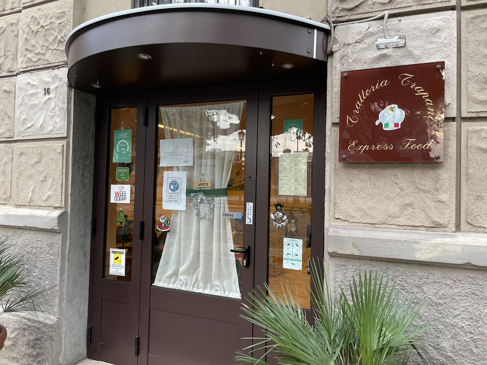
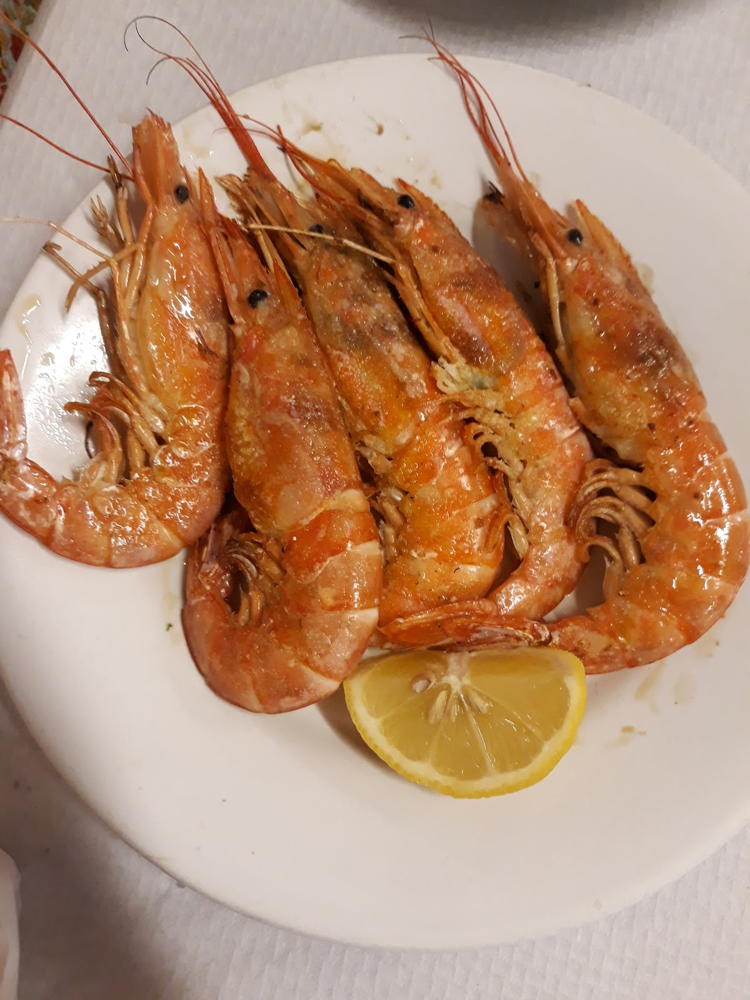
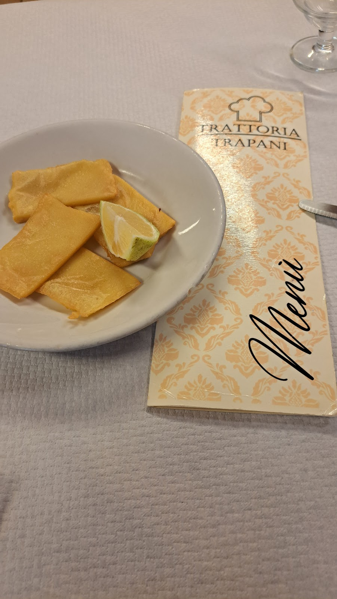
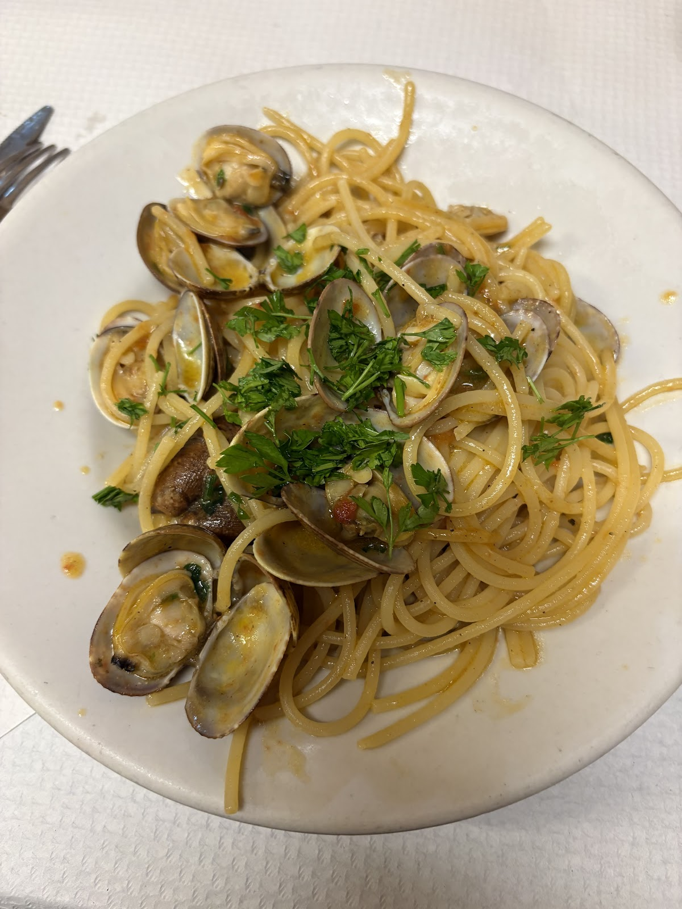
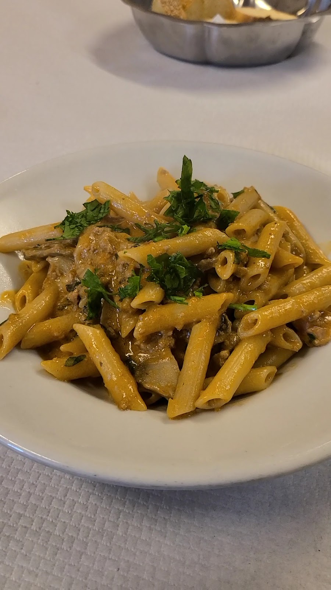
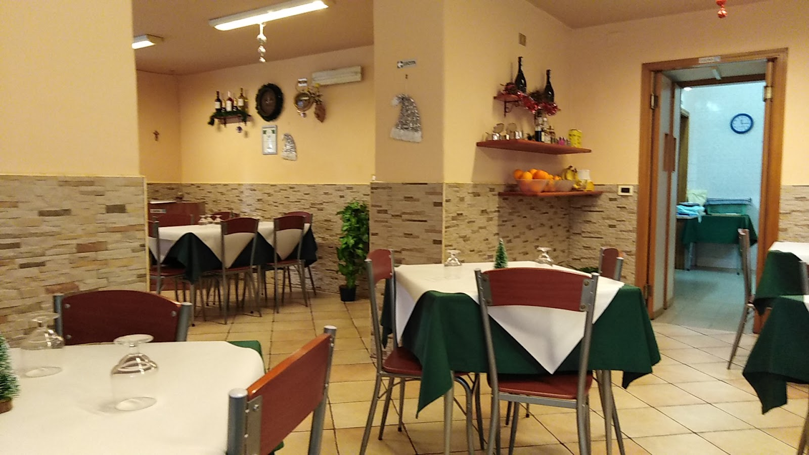
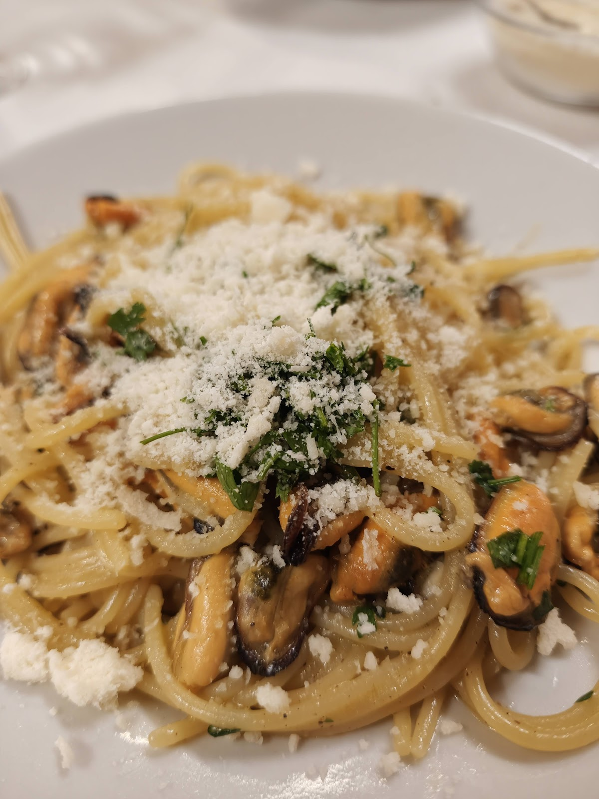
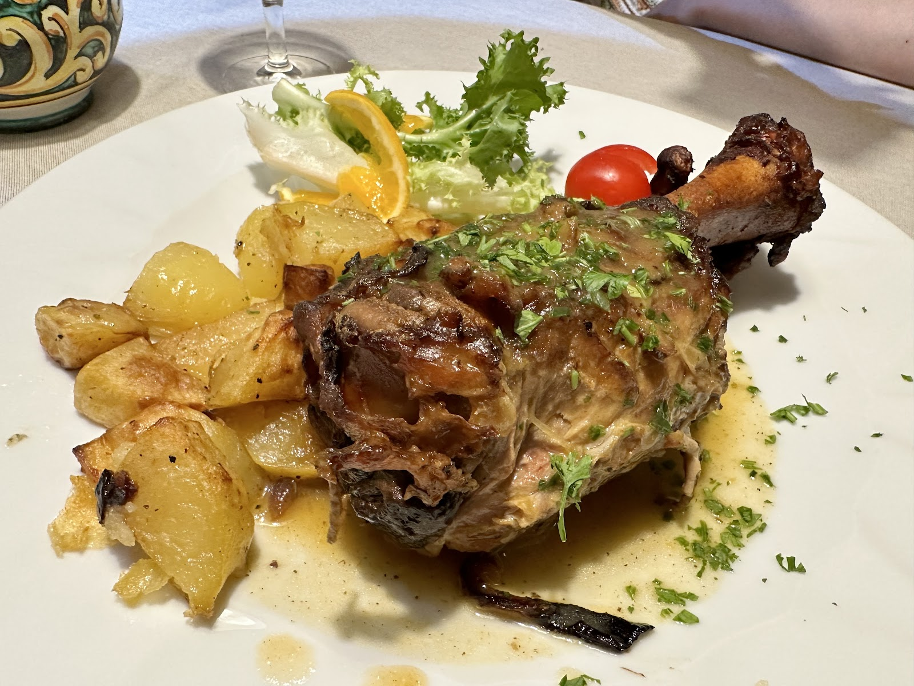
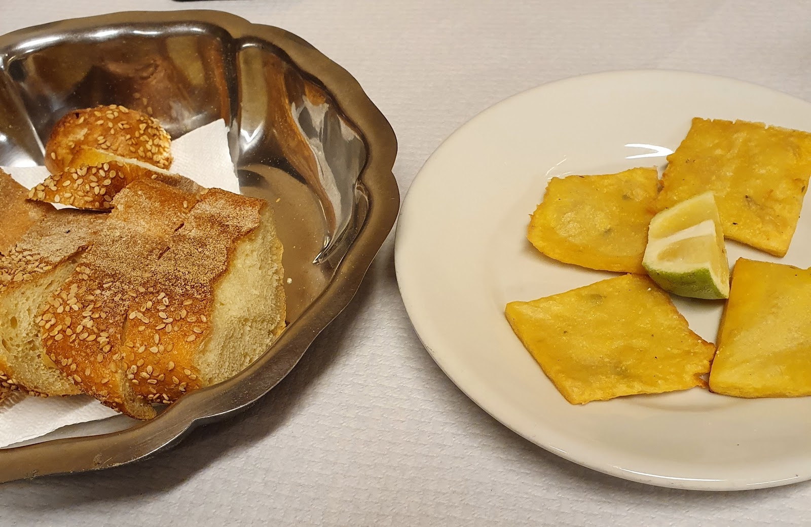
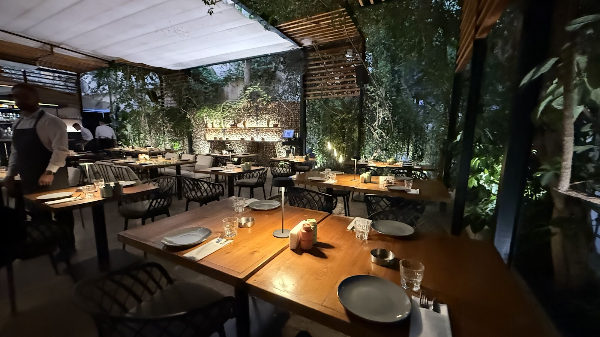

La trattoria di famiglia a due passi da Palermo Centrale — scendi dal treno, siediti, mangia come a casa. Family cooking, two minutes from the central station.


Chi arriva a Palermo in treno la trova quasi per caso, girato l'angolo della stazione: una sala semplice, tovaglie vere, e una cucina che fa una sola cosa — i piatti siciliani di sempre, fatti bene.
Step off the train and you'll find it just around the corner: a simple room, real tablecloths, and a kitchen that does one thing — the Sicilian classics, done properly.
Gamberoni alla griglia, spaghetti alle vongole, panelle in tavola prima ancora di ordinare. Dal lunedì al venerdì, pranzo e cena.
Binario unico: Sicilia. One platform only: Sicily.

Al limone, come si deve. Grilled king prawns, lemon, nothing else needed.

"The best pasta of my life" — parola di chi l'ha scritto su Google.

Mare e montagna nello stesso piatto, alla palermitana.
Il menù cambia con il mercato del mattino: antipasti di casa, primi di mare, il pesce del giorno e la carne alla brace. I prezzi sono quelli onesti di una trattoria di quartiere.
The menu follows the morning market — house antipasti, seafood pastas, the day's catch and grilled meats, at honest neighbourhood-trattoria prices.
Prezzi e piatti del giorno in trattoria — chiamateci per il menù di oggi. Today's dishes and prices at the counter — call us for today's menu.
CONVALIDATO · DAL QUARTIERE




"Honestly, I've been to many Italian restaurants in and outside of Italy but I've had the best pasta of my life here! I've got to give it to Sicilian cuisine."
"Very nice restaurant in Palermo city centre. Family restaurant. Had tasty pasta, sea food and antipastas. We ordered 4 different pastas with beers and drinks."
★ 4,7 / 5 — 1.807 recensioni su Google
| LunedìMonday | 12:00 – 15:00 · 19:15 – 22:00 |
| MartedìTuesday | 12:00 – 15:00 · 19:15 – 22:00 |
| MercoledìWednesday | 12:15 – 15:00 · 19:15 – 22:00 |
| GiovedìThursday | 12:00 – 15:00 · 19:15 – 22:00 |
| VenerdìFriday | 12:00 – 15:00 · 19:15 – 22:00 |
| SabatoSaturday | Chiuso · Closed |
| DomenicaSunday | Chiuso · Closed |
Piazza Giulio Cesare 16, 90127 Palermo — di fronte a Palermo Centrale
Perfetta prima di un treno o appena arrivati: lasciate il trolley accanto al tavolo, ci pensiamo noi. Perfect before your train or right off it.
📞 091 616 1642 Apri in Maps